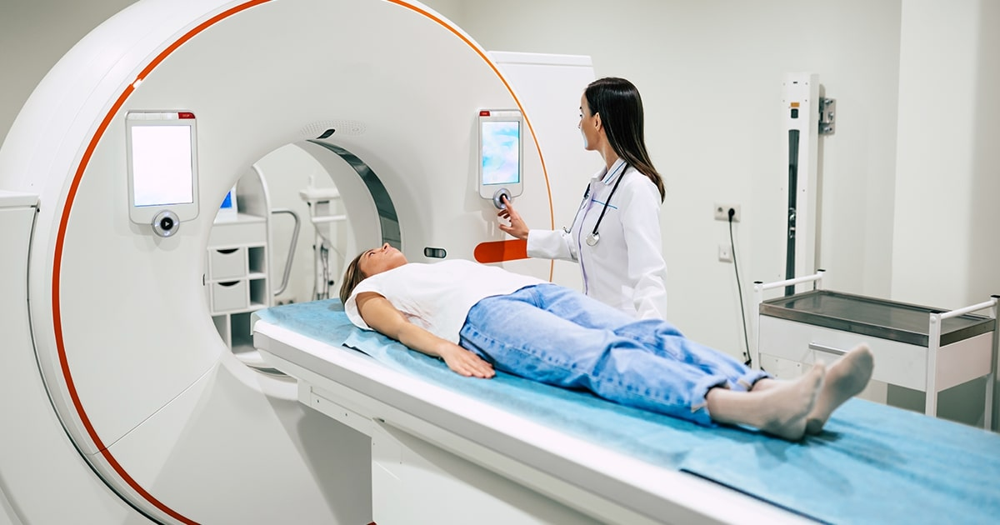

Exceptional Diagnostic Services at LifeBridge Hospital
At LifeBridge Hospital, our diagnostic services are designed to provide precise and timely information essential for effective patient care. Our state-of-the-art diagnostic center is equipped with advanced technology and staffed by highly trained professionals to ensure accurate results across a wide range of testing modalities. We utilize cutting-edge technology, including high-resolution MRI, CT scans, and ultrasounds, as well as comprehensive laboratory tests, to deliver high-quality results. This technology allows us to detect conditions early, monitor disease progression, and guide treatment strategies with precision.
Our diagnostic offerings are extensive, covering a full range of needs from imaging services and laboratory testing to cardiac diagnostics and oncology support. We are committed to providing timely and accurate results, understanding the importance of quick diagnostic information in making informed medical decisions. Our dedicated team of radiologists, pathologists, and laboratory technicians brings extensive expertise to their roles, ensuring that every test is conducted with precision and interpreted correctly to support effective patient care. We also prioritize a patient-centric approach throughout the diagnostic process. From scheduling appointments to receiving results, we strive to make the experience as seamless and supportive as possible. Our staff is always available to answer questions and provide guidance, ensuring that patients feel informed and confident in their care.

Kandy Branch
Contact us- 081-024556373

Colombo Branch
Contact us- 081-345562727

Nugegoda Branch
Contact us- 081-56782666
Achievements in Diagnostic Excellence
LifeBridge Hospital’s diagnostic services have earned widespread recognition for their excellence and accuracy. Our state-of-the-art diagnostic center is accredited by leading medical organizations, affirming our adherence to the highest standards of quality and precision. Our commitment to innovation and rigorous quality control has resulted in consistently high accuracy rates and minimal turnaround times. We are proud of our achievements in enhancing diagnostic capabilities, which have contributed to improved patient outcomes and supported timely, effective treatment decisions
Looking Ahead: Advancing Diagnostic Innovation
As we continue to build on our successes, LifeBridge Hospital remains dedicated to advancing diagnostic services through ongoing innovation and research. We are committed to integrating the latest technologies and expanding our diagnostic offerings to further enhance the accuracy and efficiency of patient care. By staying at the forefront of medical advancements, we aim to provide even more precise diagnostics and support better health outcomes for our patients.